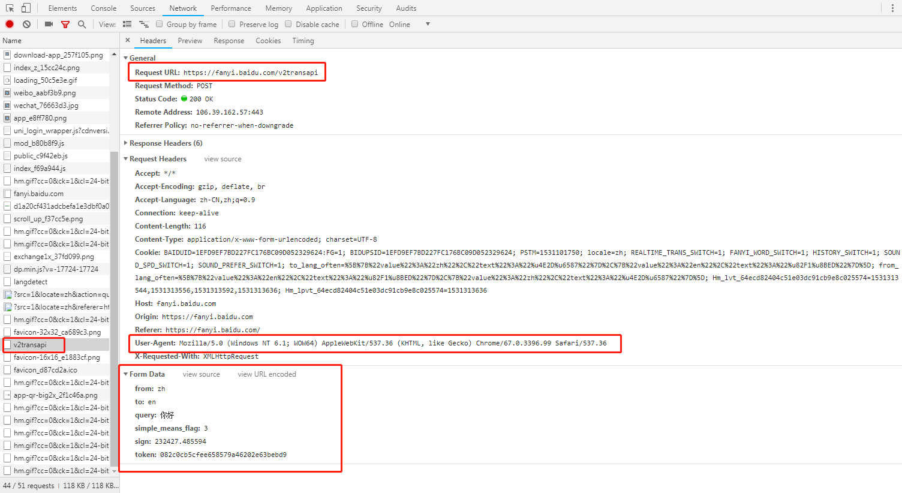

记得上个月考英语六级的时候，我突然想到要是考试的时候谁佩戴的耳机能够识别英文语音该有多强啊，那么英语听力岂不是很稳了~我在想要是能把语音什么的识别成汉语，然后通过汉语进行英文翻译传送到耳机里不就可以了。其实这个也不是什么新鲜的东西了，现在已经有了同声翻译耳机了，可能在将来有一天不再需要传译官了。以后不用再去听听力了，耶！
语音识别
最开始我想用一些算法去实现句子的语音识别，结果发现根本不是那回事，因为我没办法搞来汉语数据源，目前只找到网上只有英文单个字母发音的数据库，也有人通过结合CNN网络并提取特征值进行简单的字母发音识别。然而现在搞语音识别的一些企业确实做得很成熟了，如百度、科大讯飞等等，另外还有一些图像识别、人脸识别、文字识别的现成免费的api，简直打开了世界的大门，不得不佩服现在搞AI的奉献精神。我们可以用用人家的现成的语音识别api，通过设置接口参数完成语音转换为汉语的功能，不过缺点就是必须得连上网才能用，离线只能识别一些预置或者特定的简单短语。
通过注册账号并查询api的开发手册，完成接口设置接口参数，具体可见链接https://ai.baidu.com/docs#/ASR-Online-Python-SDK/top
这个是我定义的语音转换函数，还需要AipSpeech包的import1
2
3
4
5
6
7
8
9
10
11
12
13def getrecordstr():
""" 你的 APPID AK SK """
APP_ID = '你的APP_ID'
API_KEY = '你的API_KEY'
SECRET_KEY = '你的SECRET_KEY'
client = AipSpeech(APP_ID, API_KEY, SECRET_KEY)
# 识别本地文件
rec_result = client.asr(get_file_content('recording.wav'), 'wav', 8000, {
'dev_pid': 1536,
})
rec_str = (rec_result['result'][0])
return rec_str
在这里我把最有可能的识别结果进行直接返回，另外还会出现识别错误的结果，这里结果字符会显示错误，可以加个try一下，若识别异常返回“识别失败”，此处我输入的语音格式为wav格式，值得注意的是一定要是单通道的。
翻译爬虫
在这里我试着爬取百度翻译结果，在Chrome浏览器上F12后，在v2transapi的Headers下依次找到这几个参数Request URL，User-Agent和From Data中的参数依次设置url，headers和data参数

此外不同的代理其爬虫结果不同，在百度翻译中iphone代理尝试登陆比较简单，data中只有3个参数，PC端代理下sign破解比较费劲。因此我便在爱词霸中不用设置用户代理即可完成爬取，其代码如下1
2
3
4
5
6
7
8
9
10
11
12
13
14
15
16
17
18
19
20
21
22
23
24
25def traslate(rec_str):
#目标URL
targetURL = "http://fy.iciba.com/ajax.php?a=fy"
#用户自定义表单，words表示的是用户要翻译的内容。这里使用的是dict类型，也可以使用元组列表（已经试过的）。
data = {}
data['type'] = 'AUTO'
data['w'] = rec_str
data['doctype'] = 'json'
data['xmlVersion'] = '1.8'
data['keyfrom'] = 'fanyi.web'
data['ue'] = 'UTF-8'
data['action'] = 'FY_BY_CLICKBUTTON'
data['typoResult'] = 'true'
#将自定义data转换成标准格式
data = urllib.parse.urlencode(data).encode('utf-8')
#发送用户请求
html = urllib.request.urlopen(targetURL, data)
#读取并解码内容
rst = html.read().decode("utf-8")
rst_dict = json.loads(rst)
return rst_dict['content']['out']
至此，可通过语音将其转换为英文，但仍没法发出声来，也就是用机器念出来，下一部分将会介绍语音合成api，并且通过树莓派发出声来~